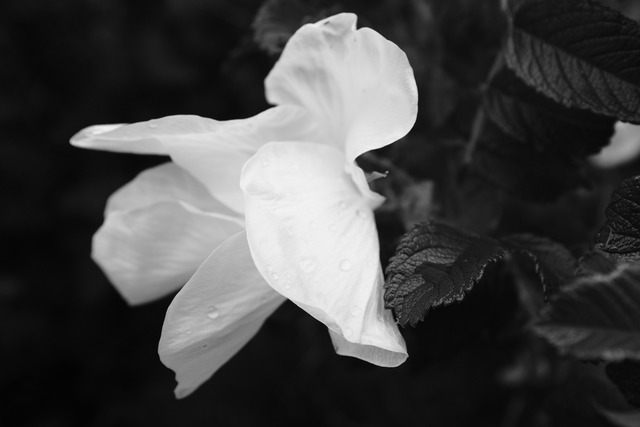
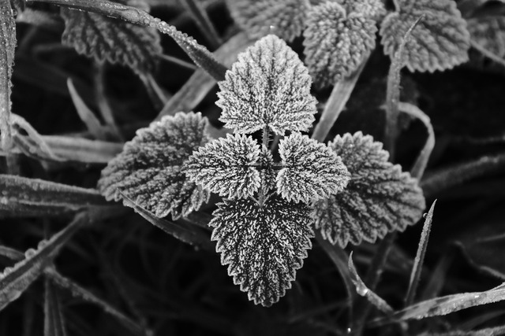
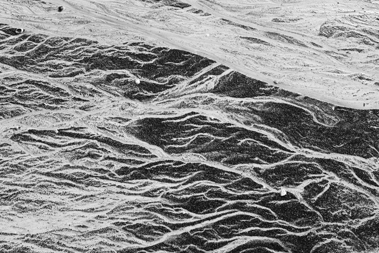
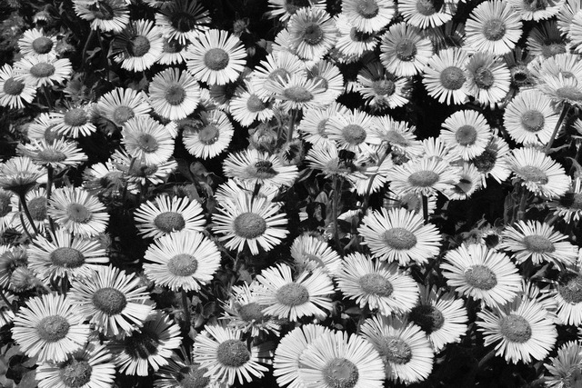

Blodyn2026-07-18
A pale flower at Sain Ffagan near Cardiff.
Stirling Castle2026-07-16
One of many gargoyles on the exterior of the Royal Palace at Stirling Castle.

Frozen Nettle2026-07-15
A nettle near the Pentland Hills, covered in tiny, beautiful spindles of ice.
Concorde2026-07-15
The underside of the fuselage of a Concorde at the Museum of Flight in East Lothian.

Silt2026-07-15
Patterns left by the receding tide on Calgary Beach, Mull.

The Botanics2026-07-14
Some flowers and pollinators at the Botanical Gardens in Edinburgh.